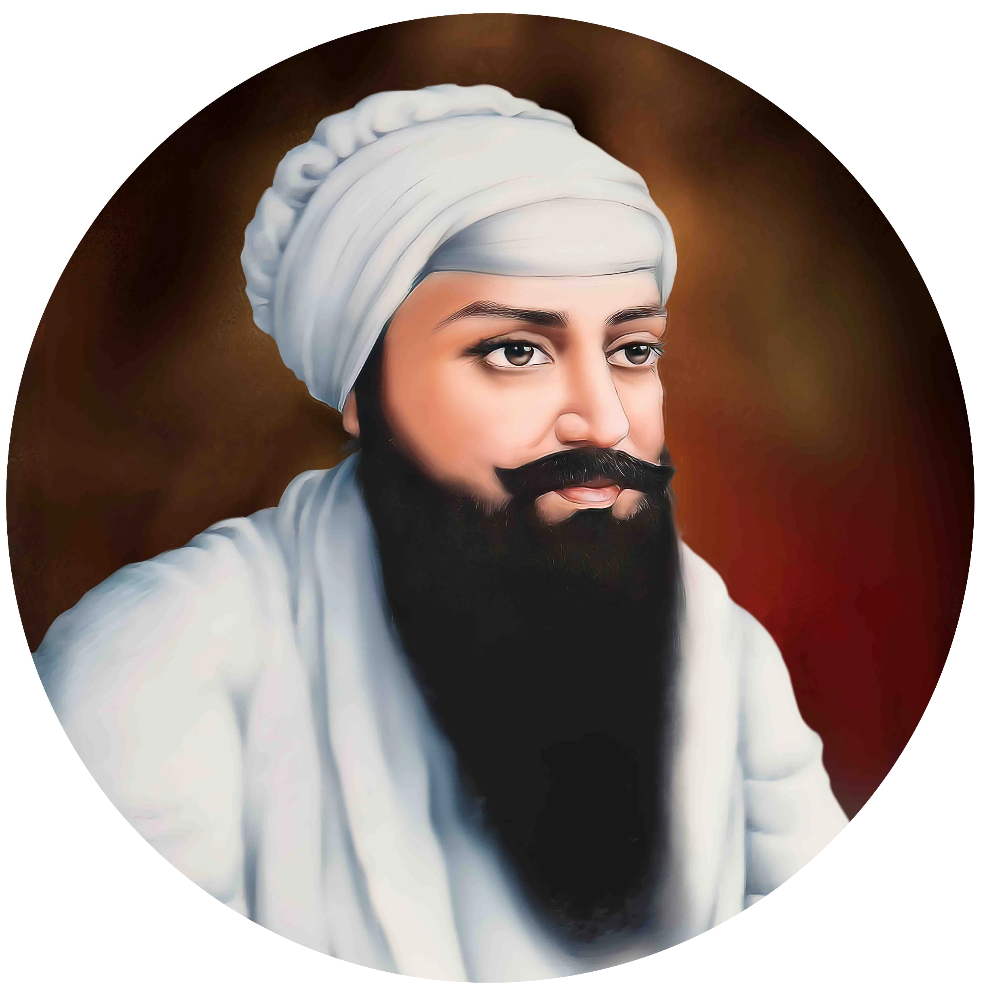

गुरु राम दास जी


शीर्षक: गुरु राम दास जी
श्रेणी: धार्मिक कोना
कलाकार: ऐतिहासिक व्यक्तित्व
वर्ष: 1534 – 1581
श्रेणी: धार्मिक कोना
कलाकार: ऐतिहासिक व्यक्तित्व
वर्ष: 1534 – 1581
गुरु राम दास जी
चतुर्थ सिख गुरु, गुरु राम दास जी का जन्म 24 सितंबर 1534 को लाहौर के चूना मंडी में पिता हरि दास जी और माता दया कौर जी के घर हुआ था। उनका आरंभिक नाम भाई जेठा जी था। उन्होंने अपने जीवन के 40 वर्ष सिख संगत और गुरु अमर दास जी की निष्काम सेवा में समर्पित किए, जिसके उपरांत उन्हें चतुर्थ गुरु मनोनीत किया गया।
गुरु राम दास जी ने गोइंदवाल से अपना केंद्र बदलकर एक नए नगर 'गुरु का चक' (जिसे रामदासपुर और बाद में अमृतसर कहा गया) की स्थापना की। उन्होंने यहाँ एक प्राकृतिक जलाशय को भव्य अमृत सरोवर के रूप में विस्तृत कराया, जो आज विश्वप्रसिद्ध श्री हरमंदिर साहिब (स्वर्ण मंदिर) का केंद्र है। उन्होंने सिख विवाह पद्धति के लिए पवित्र 'चार लावां' के भजनों की रचना की, जो आज भी आनंद कारज का आधार हैं। उन्होंने सिख आंदोलन के आर्थिक व सामाजिक विस्तार के लिए 'मंजी व मसनद संगठन' को सुदृढ़ किया। गुरु राम दास जी ने अपने कनिष्ठ सुपुत्र अर्जन मल (गुरु अर्जन देव जी) को उनकी उच्च आध्यात्मिक योग्यता के आधार पर पंचम गुरु नियुक्त किया। 1 सितंबर 1581 को गोइंदवाल साहिब में वे ज्योति-जोत समाए।
'जैसे एक दीपक से दूसरा दीपक प्रज्वलित होता है, वैसे ही गुरु की दिव्य ज्योति उनमें समाहित होकर संसार के अंधकार को दूर करेगी।'
— गुरु राम दास जी
चतुर्थ सिख गुरु, गुरु राम दास जी का जन्म 24 सितंबर 1534 को लाहौर के चूना मंडी में पिता हरि दास जी और माता दया कौर जी के घर हुआ था। उनका आरंभिक नाम भाई जेठा जी था। उन्होंने अपने जीवन के 40 वर्ष सिख संगत और गुरु अमर दास जी की निष्काम सेवा में समर्पित किए, जिसके उपरांत उन्हें चतुर्थ गुरु मनोनीत किया गया।
गुरु राम दास जी ने गोइंदवाल से अपना केंद्र बदलकर एक नए नगर 'गुरु का चक' (जिसे रामदासपुर और बाद में अमृतसर कहा गया) की स्थापना की। उन्होंने यहाँ एक प्राकृतिक जलाशय को भव्य अमृत सरोवर के रूप में विस्तृत कराया, जो आज विश्वप्रसिद्ध श्री हरमंदिर साहिब (स्वर्ण मंदिर) का केंद्र है। उन्होंने सिख विवाह पद्धति के लिए पवित्र 'चार लावां' के भजनों की रचना की, जो आज भी आनंद कारज का आधार हैं। उन्होंने सिख आंदोलन के आर्थिक व सामाजिक विस्तार के लिए 'मंजी व मसनद संगठन' को सुदृढ़ किया। गुरु राम दास जी ने अपने कनिष्ठ सुपुत्र अर्जन मल (गुरु अर्जन देव जी) को उनकी उच्च आध्यात्मिक योग्यता के आधार पर पंचम गुरु नियुक्त किया। 1 सितंबर 1581 को गोइंदवाल साहिब में वे ज्योति-जोत समाए।
'जैसे एक दीपक से दूसरा दीपक प्रज्वलित होता है, वैसे ही गुरु की दिव्य ज्योति उनमें समाहित होकर संसार के अंधकार को दूर करेगी।'
— गुरु राम दास जी

मोबाइल पर खोलें
अपने फोन पर इस कलाकृति को देखने के लिए स्कैन करें।